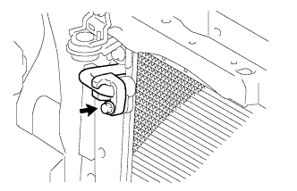
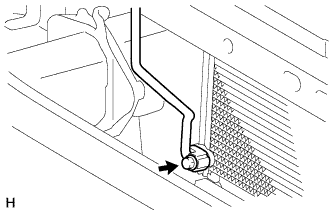
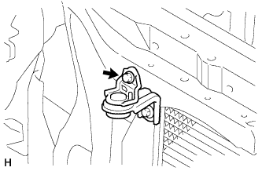
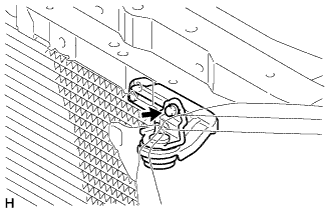
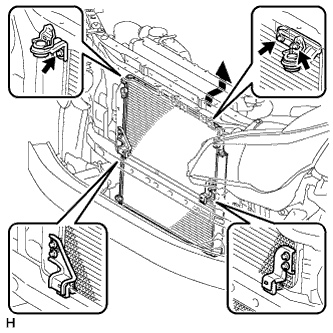
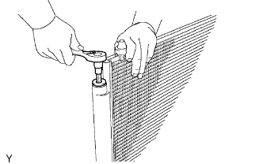
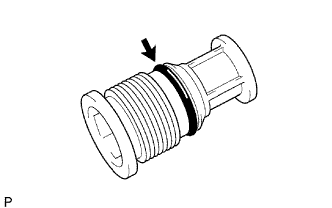
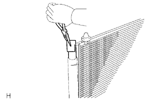

CONDENSER > REMOVAL |
| 1. DRAIN ENGINE COOLANT |
Drain the engine coolant (Click here).
| 2. REMOVE RADIATOR ASSEMBLY |
Remove the radiator assembly (Click here).
| 3. RECOVER REFRIGERANT FROM REFRIGERATION SYSTEM |
Start the engine.
Turn the A/C switch on.
Operate the cooler compressor while the engine speed is approximately 1000 rpm for 5 to 6 minutes to circulate the refrigerant and collect the compressor oil remaining in each component into the cooler compressor.
Stop the engine.
Recover the refrigerant from the A/C system using a refrigerant recovery unit.
| 4. DISCONNECT DISCHARGE HOSE SUB-ASSEMBLY |
|  |
Remove the bolt and disconnect the discharge hose from the cooler condenser.
Remove the O-ring from the discharge hose.
| 5. DISCONNECT AIR CONDITIONING TUBE ASSEMBLY |
|  |
Remove the bolt and disconnect the air conditioning tube assembly from the cooler condenser.
Remove the O-ring from the air conditioning tube assembly.
| 6. DISCONNECT NO. 1 COOLER CONDENSER BRACKET |
|  |
Remove the bolt and disconnect the No. 1 cooler condenser bracket.
| 7. DISCONNECT NO. 2 COOLER CONDENSER BRACKET |
|  |
Remove the bolt and disconnect the No. 2 cooler condenser bracket.
| 8. REMOVE COOLER CONDENSER ASSEMBLY |
|  |
Remove the 3 bolts and cooler condenser as shown in the illustration.
| 9. REMOVE COOLER DRYER |
|  |
Using a 14 mm socket hexagon wrench, remove the cap from the modulator.
|  |
Remove the O-ring from the cap.
|  |
Using pliers, remove the cooler dryer.